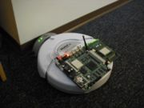
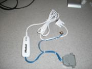
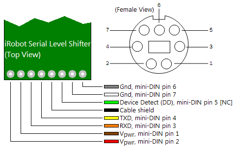
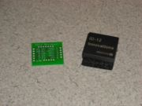
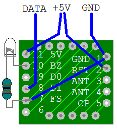
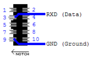
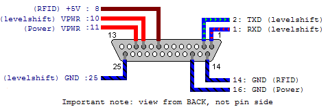

|
Building a Node

Completed node with Soekris net5501 mounted on iRobot Create
Contents
1. Parts Required
1.1. One-Time Purchases
1.2. Per-Node Purchases
2. Preparing the Soekris net5501
3. Creating the Adapter Cabling
4. Soldering the RFID Reader
5. Completing the RFID Serial Connector
6. DB-25 Connection Summary
7. Putting It All Together
Parts Required
The following lists includes part numbers that refer to Unicorn Electronics in Johnson City, NY. Other items are from Sparkfun Electronics, and the remaining parts are sourced from miscellaneous venues.
SanDisk 8GB Ultra CompactFlash Card. Wireless USB Adapter
One-Time Purchases
Item Price Item # Quantity Total
----------------------------------------------------------------------------------------------------------
Null modem adapter $ 5.00 51-8761 1 $ 5.00
DB9M to DB9M cable $ 6.00 51-8215 1 $ 6.00
F-F gender changer $ 3.95 51-8704 1 $ 3.95
Soldering iron $ 8.95 24-8308 1 $ 8.95
Solder, 4oz $10.00 26-0592 1 $ 10.00
Wire strippers/cutters $ 3.50 24-0200 1 $ 3.50
Multimeter $39.99 39-6000 1 $ 39.99
Compact Flash USB adapter $ 9.95 50-Z011 1 $ 9.95
----------------------------------------------------------------------------------------------------------
Per-Node Purchases
Item Price Item # Quantity Total
---------------------------------------------------------------------------------------------------------
iRobot Create with battery and dock $___.__ ------- 1 $___.__
iRobot Create serial cable [incl.] ------- 1 [incl.]
Soekris net5501 $245.00 ------- 1 $245.00
PCI to miniPCI card $___.__ ------- 1 $___.__
(Four) R52 low-power 802.11a/b/g cards $ 44.95 ------- 4 $179.80 (Only One Used Now)
TP-Link TL-WN321G G Wireless USB Adapter $___.__ ------- 1 $___.__
(Four) Antennae $ 15.00 ------- 4 $ 60.00 (Only One Used Now)
(Four) Attenuators $___.__ ------- 4 $___.__
Male DB25 $ 0.99 23-5920 1 $ 0.99
DC Connector, 2.1mm/5.5mm $ 1.00 23-4640 1 $ 1.00
Compact Flash card, 2GB $ 26.95 50-3508 1 $ 26.95 (Obsolete)
Compact Flash card, 8GB $___.__ ------- 1 $___.__
25' of 22-awg wire $ 3.44 22-8021 1 $ 3.44
(Two) 1Kohm resistor $ 0.15 10-0001 2 $ 0.30
Amber LED $ 0.99 14-8502 1 $ 0.99
ID12 RFID breakout board $ 0.95 SEN-08423 1 $ 0.95 (Sparkfun)
RFID reader chip ID-12 $ 29.95 SEN-08419 1 $ 29.95 (Sparkfun)
10-position IDC header $ 1.17 23-4301 1 $ 1.17
-----------------------------------------------------------------------------------------------========-
Preparing the Soekris net5501
The Soekris net5501 may arrive bare, or it may come packaged in an enclosure. If it is in an enclosure, carefully unscrew the case, then slide the top cover off to expose the board. Network interfaces and a CF card will need to be added, so also unscrew the four screws that secure the mainboard into the enclosure, the screw next to the CF card slot, and lift out the board. You should start by installing the four wireless interfaces. Install one in the on-board slot, then slide in the PCI-to-miniPCI card and Starting with the two lower sockets, insert the wireless cards at a 30-degree angle to the board, push them in somewhat firmly, then push down to rotate each card down into its socket. The two metal arms should snap onto the sides and retain the card. Repeat this process with the top card; use the inner socket so that no miniPCI card extends beyond the edges of the PCI card.
You should already have prepared the CF card by cloning an existing CF card or following the preliminary instructions in Installing MiNT Node Software, so next the CF card should be installed. Examine the top of the mainboard, where the Compact Flash card sockets should be visible. Insert the CF card into the socket; note that for successful functionality, the card should be at least 2GB. Once the CF card and four wireless interfaces are installed, you are ready to prepare the interface between the robot and the embedded board.
Creating the Adapter Cabling

MiNT interface cable before RFID reader
The adapter cabling connects three separate sockets: the 25-pin DB25 female cargo bay connector in the robot, the size J DC power jack on the net5501, and the standard DB9 serial port on the net5501. To make this adapter, you will need wire, a size J DC power plug, a male DB25 solder-type connector, an optional DB25 hood and strain reliever, and most importantly, the serial to mini DIN cable included with the robot. This final piece is important because it contains a level shifter to translate the 5V TTL-level serial voltage needed by the robot to the 12V RS232-level serial voltage required by the net5501.
The first step to constructing the adapter is to take the level shifter cord, turn to the back of the module in the middle of the cable, and unscrew the two Philips screws holding the module together. With the two screws removed, gently pry the module apart, being careful of the thin wires within. A cable with three wires is soldered to one end of the board, leading to the serial connector. The other end of the board has the eight wires of the mini DIN connector; it is this end in which we will be primarily interested. I reverse-engineered the connections on the board with the help of a multimeter, as indicated in the below image:

As you can see, we will need to connect four wires, two for power and ground, and two for signal connections, TXD and RXD. Please note that the diagram above assumes the front (component side) of the board is up. Before we can do this, we must remove the existing cable. To make your life easier, first carefully cut the eight wires about 3/4" from the board. You can discard the mini DIN connector if you so choose. Be sure that you are not disturbing the 3-wire serial interface at the opposite end of the board. You should then pull gently on each of the remaining 8 wire pieces still attached to the board as you touch the soldering iron to the underside of the board where that wire meets the board. You should feel it start to give and pull out; immediately remove the iron once the wire is free. Repeat seven more times, and you should be left with eight clean solder pads and no stray copper strands.
The next step is to solder four wires to the board to replace the cable you just removed. Cut four equal lengths of 22-awg, solid wire (not stranded - this will be frustrating and hard to work with); 9" would be a decent length. Strip about 1/8" of insulation off both ends of each of the wires. Pre-tin the wire by heating each end of each wire briefly and touching the solder to it. You should have a very small amount of solder on each end; remove any excess. To minimize the possibility of accidental short circuits, you will soldering to the leftmost (Vpwr, red), RXD (orange), TXD (yellow), and rightmost (Gnd, gray) pads, where the colors indicate the color of the wire that you removed. Starting from one side and working your way to the other, place the end of a wire into the dimple of its pad, apply gently downward force, and touch the soldering iron to the side of the stripped wire. It should slide into the hole in the circuit board. Once all four wires are inserted, you may wish to add a very small amount of solder to the top and bottom of the pads to ensure a good connection. Be careful that no solder bridges two wires, especially between RXD and TXD. Before you reassemble the module, mark which of the wires is which (Vpwr, RXD, TXD, Gnd), ideally by writing on a piece of tape at the far end of the wire. This completes the modification of the level shifter; put the case back together and resecure the two screws.
The next step will be to assemble the DC power plug. Cut two lengths of wire, about 9" to 12" each; one end of each wire should be stripped 1/8", the other end about 1/4" to 3/8". Unscrew the plastic cover on the jack, solder the wires to the two contacts of the jack, then mark them with tape and write "tip" and "ring" for the center and outer connection respectively. Slide the plastic cover over the unattached ends of the wire and screw it onto the jack. The final step is to solder the six wire ends that you should have, four from the serial level shifter and two from the DC jack, onto the male DB25 connector. The DC jack and serial board should have connections as shown in this image, although the cover will be back on your level shifter:

First you should solder the four wires for the level shifter to the DB25 connector. If you look carefully at the inside of the front of the connector, you will see the numbering next to the pins. The larger row is numbered 1 to 13, while the smaller row is 14 through 25. You will be making the following connections:
| mini-DIN Pin and Function |
DB25 Pin and Function |
| 2 Switched Vpwr |
10 Switched Vpwr |
| 3 RXD |
1 RXD |
| 4 TXD |
2 TXD |
| 6 Battery Gnd |
25 Battery Gnd |
For each connection, begin by locating the solder cup at the back of the DB25 plug corresponding to the pin you wish to connect. First heat the solder cup for 2 seconds, then touch the solder to the cup and remove solder and iron to leave a small amount of solder in the solder cup. Next, bring the stripped wire to the cup, hold it in the cup, and apply the soldering iron while gently pushing the wire down into the cup. It should move when the solder melts; remove the iron and continue to hold the wire until the solder hardens. Repeat this process for the next three connections. Be very careful that no solder bridges adjacent pins. If you're not sure, use the resistance function of the multimeter to check if adjacent pins have infinite resistance relative to each other (as they should), not very small resistance (a short).
You will complete the soldering process by connecting the two wires from your DC power jack to the DB25 plug, as detailed below:
| DC Jack Pin and Function |
DB25 Pin and Function |
| Pin |
V+, 5V to 25V |
11 |
Switched Vpwr |
| Ring |
Gnd |
16 |
Battery Gnd |
Once all solder connections are complete and checked, remove the tape markings on the wires, and fit the cover onto the DB25 connector. You may wish to add cable ties to protect the connections and neaten the final product.
Soldering the RFID Reader

RFID breakout board with ID-12
This step of the construction involves soldering the ID-12 RFID reader to the breakout board, then adding the read LED and wiring the reader to the DB-25 from the previous step. Begin by removing the ID-12 from its protective foam, then insert it into the breakout board such that the ends of the pins are at the traces side of the board and the bulk of the chip is on the blank side. There should be only one way to correct fit it in. Make sure the pins are as far through as they will go, then very carefully solder each of the pins to its respective pad. Try to hold the iron on the pins for as short as possible to avoid damaging the ID-12. Also make sure no solder flows between adjacent pins, as shorts will at least make the chip function incorrectly, and at worst destroy it. Now four wires should be soldered to the breakout board. Cut two 9" wires, strip one end of each about 1/4", insert into the hole connected to pin 11 and pin 2 respectively, and solder in place. Twist these two (+5V wires) together for later attachment to the DB-25 connector. Cut another 9" wire, strip one end 1/4", and attach to pin 8 on the breakout board. This is the data wire, so strip the other end about 1/4" to 3/8" and solder onto one leg of a 1K resistor. This wire will be soldered to the DB-10 serial connector later. The final 9" wire should be stripped 1/4" and connected to pin 1 of the breakout board; this will be ground later. Cut a 1.25" wire, strip both ends a bit less 1/4", and solder between pins 1 and 7 to bring ground to pin 7.
Next, the read LED should be soldered on. Examine a resistor, and find which side of the casing has a flat area. Cut one leg of a second 1K resistor to about 1/4", cut the leg of the LED at the flat side to 3/8", and solder the two together. As with the RFID reader, try not to hold the heat on for too long. Cut the other leg of the LED to 1/2" and solder to pin 10, then trim the remaining resistor leg to 1/2" and solder to pin 7, on top of the ground wire. At this point, you may wish to strengthen the connections on the breakout board with a dab of hot glue.

Now the connections to the DB-25 connector need to be made. The two +5V wires should go to pin 8 of the connector, the ground wire to pin 14, and then solder a second 9" wire to pin 14 as well. You should still have the resistor on the wire from the Data (D1) pin on the breakout board, and the ground wire you just soldered on, for a total of two wires. Solder a wire onto the empty end of the 1K resistor from D1, then trim the two remaining wires to the same length.
| RFID Breakout Connection |
DB25 Pin and Function |
| 1/7 |
GND/FS |
14 |
Ground (GND) |
| 2 |
RST |
8 |
+5V @ 100mA |
| 8 |
D1 (Data 1) |
- |
Resistor to DB-10 connector (No DB-25 connection) |
| 11 |
5V |
8 |
+5V @ 100mA |
Completing the RFID Serial Connector

DB-10 Connections
Pull the two pieces of the DB-10 connector apart, and note that the plastic-only piece is a smaller version of a larger plastic piece included in the package for the connector. In order to connect the wires to this connector, it needs to be modified slightly. Using a flat-head screwdriver, carefully bend all protruding metal pieces outwards (towards the nearest edge), being careful to keep them straight so that no adjacent pieces touch. This will simplify soldering. With the flattened metal pins upwards and the protruding notch towards the left, we will label the pin at top left as 1, top right as 2, bottom left as 9, and bottom right as 10. Put a small dab of solder on pins 3 and 9, strip the ends of the two wires to 1/8" each, and solder ground to pin 9 and the data (D1, technically RXD in the RS232 standard) to pin 3. Add a generous amount of hot glue over the connector and fit the larger of the plastic pieces in for use in inserting and removing this connector.
DB-25 Connection Summary
The DB-25 connector should have a total of 9 wires when soldering is completed. Each of the pins indicated below will have 1 wire connected except for 14, which has two wires, and 8, which also has two wires. Of the wires from pin 14, one goes to the RFID reader, and the other goes to the DB-10 connector. From pin 8, both +5V wires go to the RFID reader. Ideally, these two wires should be twisted together to simplify later troubleshooting should it be necessary.

Putting It All Together
To complete the physical construction of the node, plug the DB25 male connector into the cargo bay, connect the DB9 female connector into the net5501's serial port, and the DC power plug into the net5501's power jack. Carefully plug the 2-wire RFID reader DB-10 plug into the internal serial connection on the board. If you turn on the robot, the net5501 should also boot. It is recommended that the first time you boot, you monitor the boot through a serial console to ensure correct loading of Voyage, connection to the wireless network, and ssh setup. If you have simply cloned another robot's CF card, you should edit /etc/hostname and /etc/networks/interfaces to set the hostname and IP address for this robot. For now, we have scripts and each time when you cloned a robot, just simply run the script. It will automatically modify the corresponding files and create the node you want.
|